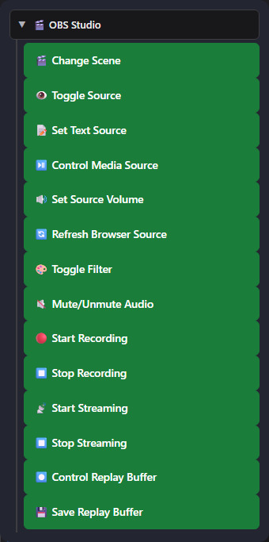

1. Connecter Flow Actions à OBS
OBS WebSocket v5 est intégré à OBS 28 et aux versions suivantes. Social Stream Ninja l’utilise pour le contrôle complet d’OBS et les événements médias.
- Dans OBS, ouvrez Outils → Paramètres du serveur WebSocket (Tools → WebSocket Server Settings).
- Activez le serveur WebSocket. Conservez le port par défaut
4455; définissez un mot de passe si vous le souhaitez. - Dans Social Stream Ninja, ouvrez la section Flow Actions et définissez l’URL OBS WebSocket et le mot de passe facultatif.
- Copiez l’URL Flow Actions et gardez-la ouverte. Une source Navigateur OBS est recommandée pour les actions d’incrustation/audio.
- Utilisez : Testeur OBS WebSocket pour vérifier la connexion avant de créer un flux.
https://socialstream.ninja/actions.html?session=YOUR_SESSION&obsws=ws://127.0.0.1:4455Ajouter
&obspw=YOUR_PASSWORD uniquement lorsqu’OBS exige une authentification. Ajoutez &obsdebug=1 pour afficher un petit badge d’état de connexion pendant le diagnostic.
Deux modes de connexion OBS
| Mode | Éléments pris en charge | Prérequis |
|---|---|---|
| OBS WebSocket v5 | Tous les déclencheurs et actions de ce guide. | OBS 28+, serveur WebSocket activé et page Flow Actions ouverte. |
| API des sources Navigateur OBS | Repli pour changer de scène, démarrer/arrêter la diffusion ou l’enregistrement et enregistrer le tampon de relecture. | Flow Actions chargé dans OBS avec Advanced Access Level. Les fonctions de source, filtre, texte, volume, média, actualisation et fin de média nécessitent toujours WebSocket. |
2. Ajouter des nœuds OBS à un flux
- Ouvrez : Éditeur Event Flow et créez ou modifiez un flux.
- Faites glisser un déclencheur sur le canevas.
- Développez OBS Studio dans la liste Actions et ajoutez l’action OBS souhaitée.
- Reliez le déclencheur à l’action, configurez les noms exacts des scènes/sources OBS, enregistrez et activez le flux.

3. Déclencheurs OBS
Ils démarrent un flux lorsqu’OBS signale un événement correspondant. Ils arrivent sous forme de type: "obs"; les détails propres à OBS se trouvent sous meta.
| Déclencheur | Moment du déclenchement | Données utiles |
|---|---|---|
| Diffusion OBS démarrée (OBS Stream Started) | La diffusion atteint l’état démarré. | meta.outputState, meta.outputActive |
| Diffusion OBS arrêtée (OBS Stream Stopped) | La diffusion atteint l’état arrêté. | meta.outputState, meta.outputActive |
| Enregistrement OBS démarré (OBS Recording Started) | L’enregistrement démarre. | meta.outputState |
| Enregistrement OBS arrêté (OBS Recording Stopped) | L’enregistrement s’arrête. | meta.outputState |
| Scène OBS changée (OBS Scene Changed) | La scène de programme active change. | meta.sceneName |
| Média OBS terminé (OBS Media Ended) WebSocket | Une entrée média termine sa lecture. Vous pouvez filtrer par nom exact de source média. | meta.inputName, meta.inputUuid |
| Tampon de relecture OBS enregistré (OBS Replay Buffer Saved) | OBS termine l’enregistrement d’une relecture. | meta.savedReplayPath |
4. Actions OBS
| Action | Configuration et comportement | Connexion |
|---|---|---|
| Changer de scène (Change Scene) | Change la scène de programme active selon son nom exact. | WebSocket ou repli par l’API de source Navigateur |
| Afficher/masquer une source (Toggle Source) | Affiche, masque ou inverse la visibilité d’un élément de scène. Scene et Group sont des champs de ciblage facultatifs. | WebSocket |
| Définir une source texte (Set Text Source) | Met à jour Texte (GDI+) ou Texte (FreeType 2), avec des variables de modèle. | WebSocket |
| Contrôler une source média (Control Media Source) | Lit/reprend, met en pause, redémarre, arrête, passe au suivant ou au précédent. | WebSocket |
| Régler le volume de la source (Set Source Volume) | Règle une entrée de -100 à +26 dB. | WebSocket |
| Actualiser une source Navigateur (Refresh Browser Source) | Recharge une source Navigateur sans cache. | WebSocket |
| Activer/désactiver un filtre (Toggle Filter) | Active, désactive ou inverse l’état d’un filtre de source nommé. | WebSocket |
| Couper/réactiver le son (Mute/Unmute Audio) | Coupe, réactive ou inverse l’état muet d’une entrée. | WebSocket |
| Démarrer l’enregistrement (Start Recording) | Démarre l’enregistrement OBS. | WebSocket ou repli par l’API de source Navigateur |
| Arrêter l’enregistrement (Stop Recording) | Arrête l’enregistrement OBS. | WebSocket ou repli par l’API de source Navigateur |
| Démarrer la diffusion (Start Streaming) | Démarre la sortie de diffusion OBS configurée. | WebSocket ou repli par l’API de source Navigateur |
| Arrêter la diffusion (Stop Streaming) | Arrête la sortie de diffusion OBS. | WebSocket ou repli par l’API de source Navigateur |
| Contrôler le tampon de relecture (Control Replay Buffer) | Démarre, arrête ou inverse l’état du tampon de relecture. | WebSocket |
| Enregistrer le tampon de relecture (Save Replay Buffer) | Enregistre le tampon de relecture actuellement actif. | WebSocket ou repli par l’API de source Navigateur |
Set Text Source et variables de flux
Le champ texte accepte les variables de message habituelles, comme {username}, {message}, {source}, et {donation}, ainsi que les valeurs ajoutées par des nœuds précédents, comme {counterValue}, {counterTarget}, et {counterRemaining}.
{username}: now {counterValue}, need {counterTarget}
Contrôles de source média
Lecture / Pause
Lecture reprend un média en pause. Pause conserve la position actuelle.
Redémarrer / Arrêter
Redémarrer repart du début. Arrêter termine la lecture et réinitialise l’entrée.
Suivant / Précédent
Parcourt les entrées prenant en charge les listes de lecture, comme Source vidéo VLC. Une source média à fichier unique peut ignorer ces actions.
Volume, son muet et filtres
Régler le volume de la source (Set Source Volume) utilise les dB, comme le mixeur OBS : 0 dB correspond à un gain inchangé, les valeurs négatives réduisent le volume et -100 dB est pratiquement muet. Le mode muet est un état distinct. Toggle Filter modifie seulement l’activation d’un filtre existant, pas ses réglages.
Tampon de relecture (Replay Buffer)
Activez d’abord le tampon de relecture dans Paramètres OBS → Sortie. Utilisez Contrôler le tampon de relecture (Control Replay Buffer) pour le démarrer/l’arrêter, puis Enregistrer le tampon de relecture (Save Replay Buffer) pour écrire le segment récent mis en mémoire tampon sur le disque.
5. Recettes utiles
Message horaire pendant le direct OBS
Dans l’éditeur Event Flow, choisissez Commencer avec un modèle → Intermédiaire → Message horaire pendant le direct OBS (Start with a template → Intermediate → Hourly message while OBS is live). Il est désactivé au départ et comprend trois branches dans un même flux :
- OBS Stream Started → Set Gate State : ON
- Time Interval (3600 secondes) → ON/OFF Switch → Send Message
- OBS Stream Stopped → Set Gate State : OFF
Les deux actions Set Gate State ciblent déjà le même interrupteur, désactivé par défaut. Modifiez Envoyer un message (Send Message) pour choisir votre plateforme de chat, Twitch dans l’exemple, et votre message. Choisissez une plateforme ou All Platforms ; Reply to Source ne peut pas répondre à un événement OBS ou à un déclenchement de minuteur.
Connecter Flow Actions à OBS, gardez Social Stream et le chat de destination connectés, puis enregistrez et activez le flux avant de démarrer votre diffusion. L’interrupteur attend un événement de démarrage OBS ; le charger pendant un direct en cours ne l’active pas. Redémarrer Social Stream le remet aussi sur OFF.
Temporisation : l’intervalle suit son propre calendrier ; le premier rappel peut donc arriver moins d’une heure après le début du direct. Les rappels suivants se répètent toutes les heures tant que l’interrupteur est sur ON. Modifiez Time Interval pour une autre fréquence ; la valeur est en secondes.
Texte de compteur dans OBS
Placez Définir une source texte (Set Text Source) après le chemin compteur/vérification et utilisez :
{username}: now {counterValue}, need {counterTarget}
Exécuter une action après une vidéo
Média OBS terminé (OBS Media Ended) (filtrer sur Intro Video) → Changer de scène (Change Scene) à Main.
Redémarrage d’un média par le chat
Le message est égal à (Message Equals) !replayintro → condition d’autorisation → Contrôler une source média : redémarrer (Control Media Source: Restart).
Actualiser une page d’alertes
Le message est égal à (Message Equals) !refreshalerts → condition de modérateur → Actualiser une source Navigateur (Refresh Browser Source).
Baisser la musique pendant une alerte
Régler le volume de la source (Set Source Volume) à -24 dB → action d’alerte → Delay → rétablir à 0 dB.
Flux de relecture
Diffusion OBS démarrée (OBS Stream Started) → Contrôler le tampon de relecture : démarrer (Control Replay Buffer: Start); une commande de confiance distincte exécute Enregistrer le tampon de relecture (Save Replay Buffer).
6. Autres contrôles OBS intégrés
Social Stream Ninja possède aussi d’anciens contrôles de source Navigateur OBS dans le dock Streaming Chat. Ils n’utilisent pas le pont WebSocket Flow Actions.
| Option | Fonction | Prérequis |
|---|---|---|
| Indicateur de scène OBS actuelle | Affiche la scène active dans le dock Streaming Chat. | Dock chargé dans OBS avec autorisation de lecture. |
| Les invités peuvent utiliser !cycle | Passe à la scène OBS suivante, avec une limite d’une fois toutes les 10 secondes. | Activez l’option du panneau ; le dock doit être chargé dans OBS avec un accès Advanced. |
| Les utilisateurs autorisés peuvent utiliser !start / !stop | Démarre ou arrête la diffusion depuis des utilisateurs de chat de confiance. | Activez l’option du panneau ; le dock doit être chargé dans OBS avec une autorisation de contrôle Full/Advanced. |
| Panneau distant de contrôle OBS | Affiche les scènes et permet de changer de scène ou d’activer/désactiver diffusion et enregistrement lorsque le dock OBS cible accorde le niveau de contrôle requis. | Dock Streaming Chat associé à un dock exécuté dans OBS. |
| Testeur OBS WebSocket | Vérifie la version, la connexion, les scènes et les requêtes individuelles avant d’utiliser Event Flow. | Ouvrir le testeur |
7. Dépannage
| Problème | Vérifiez |
|---|---|
| Rien ne se passe | Le flux est enregistré et activé ; Flow Actions est ouvert ; les deux utilisent le même identifiant de session. |
| OBS ne se connecte pas | Le serveur WebSocket est activé, l’URL est ws://127.0.0.1:4455, et que le mot de passe correspond. Le port 4444 est l’ancien port par défaut de la v4. |
| Scène/source/filtre introuvable | Copiez le nom OBS exact. Pour la visibilité, définissez Scene ou Group si l’élément est imbriqué ou hors de la scène actuelle. |
| Le texte ne change pas | Utilisez Texte (GDI+) ou Texte (FreeType 2), vérifiez le nom de l’entrée et désactivez Lire à partir d’un fichier (Read from file). |
| Media Ended ne se déclenche jamais | Utilisez OBS WebSocket v5 et une véritable entrée média. Un média en boucle n’atteint pas l’état terminé. |
| Suivant/Précédent ne fait rien | Utilisez une source acceptant les listes de lecture, comme Source vidéo VLC. |
| L’enregistrement de la relecture échoue | Activez le tampon de relecture dans les paramètres Sortie d’OBS et démarrez-le avant l’enregistrement du tampon. |
| Les actions s’arrêtent lors d’un changement de scène | Désactivez Arrêter la source lorsqu’elle n’est pas visible (Shutdown source when not visible) sur la source Navigateur Flow Actions, ou gardez la page ouverte ailleurs. |
GetVersion → vérifier les scènes/entrées → tester la requête individuelle → tester le flux Event Flow complet.